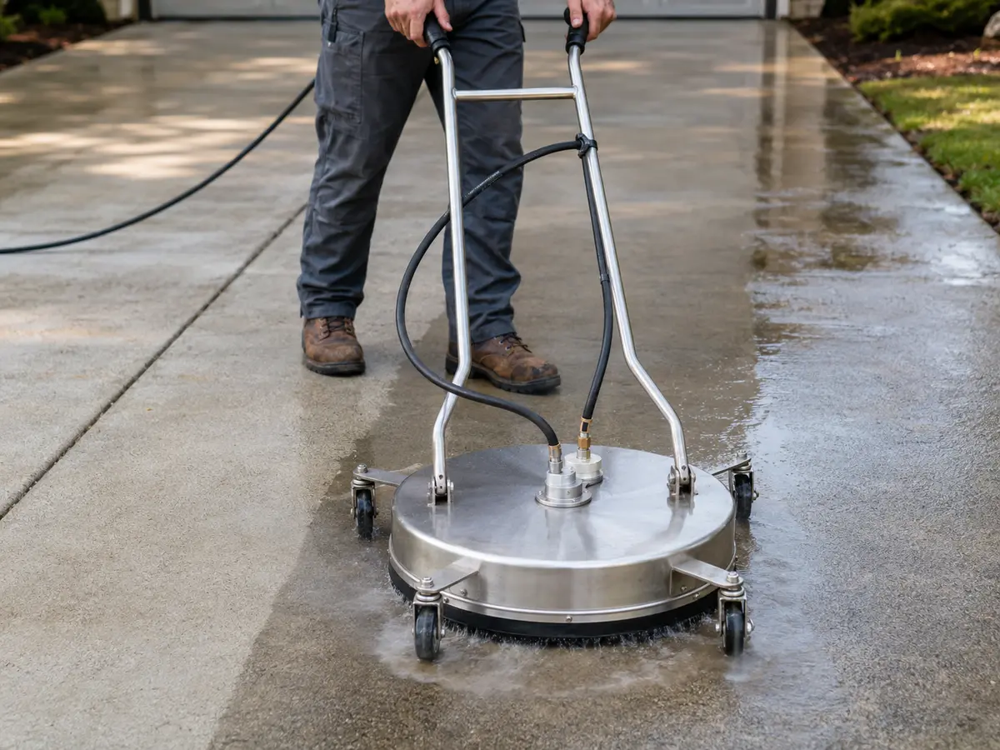

Tools and nozzles
Pressure washer tools and nozzles for Mid-Missouri projects.
Spray angle controls coverage and concentration. Orifice size controls flow and affects operating pressure. Check the stamped nozzle number, confirm that it matches the washer’s GPM rating, and test the spray pattern before approaching the surface.
Tip numbers
Read the stamped tip number before use.
On standard pressure-washer tips, the first digits identify the spray angle and the final digits identify the orifice size. A 25030 tip produces a 25-degree spray through a 3.0 orifice. The orifice must be sized for the machine’s PSI and GPM.
 0 deg
0 degRed 0 degree tip
The 0 means a zero-degree spray: a straight pencil jet. Skip it for routine house washing, deck cleaning, and homeowner concrete work unless you fully understand the risk.
Common stamp example: 00030 means 0 degree spray, 3.0 orifice.
15 deg
Yellow 15 degree tip
The 15 means a narrow 15-degree fan. It is still aggressive, so keep it moving and test before using it across a large concrete area.
Common stamp example: 15030 means 15 degree spray, 3.0 orifice.
25 deg
Green 25 degree tip
The 25 means a medium 25-degree fan. It is a common driveway cleaning and patio tip when the surface is sound and you need more bite than a rinse.
Common stamp example: 25030 means 25 degree spray, 3.0 orifice.
40 deg
White 40 degree tip
The 40 means a wider 40-degree fan. Use it for siding rinses, decks, fences, painted surfaces, and safer first passes.
Common stamp example: 40030 means 40 degree spray, 3.0 orifice.
Soap
Black soap nozzle
Black is the low-pressure soap nozzle, often marked soap or 65. Use it to apply detergent, let the cleaner dwell, then rinse with the right fan tip.
Common stamp example: 65030 means wide low-pressure soap application, 3.0 orifice.

Surface cleaner
A flatwork attachment for driveways and sidewalks. It helps keep concrete cleaning even and reduces wand marks.
Tip photos are shown in the standard color order: red 0 degree, yellow 15 degree, green 25 degree, white 40 degree, and black soap. Always check the stamped orifice size before assuming a tip matches your pressure washer.
Before you start
Prepare the equipment and work area.
1Eye protection, gloves, long pants, and closed-toe shoes.
2A pressure washer with known PSI, GPM, and no leaks.
340 degree, 25 degree, and soap tips; leave turbo and red tips aside.
4Surface-appropriate detergent and a pump sprayer if needed.
5Covers for outlets, plants, lights, and gaps around doors and windows.